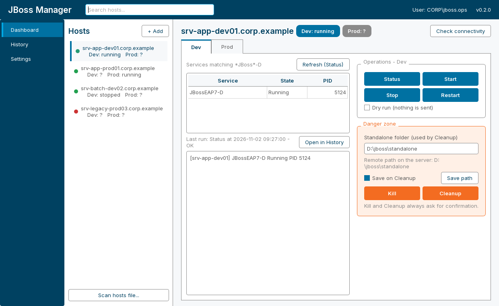

0.4.2
JBoss Manager
Check, start, stop, restart, kill and clean up the JBoss services on your Dev and Prod Windows servers over WinRM. A dashboard with live ping dots, a run history, and a tray menu. It can start at login, minimized to the tray. Passwords stay in the system keyring.

Windows 0.4.2
The installer puts the app in your user profile (%LOCALAPPDATA%\JBoss Manager), adds a Start Menu shortcut, and includes uninstall. Or unzip the portable app, keep the folder together, and run jboss-manager-gui.exe.
macOS 0.4.2
Unzip and move JBoss Manager.app to Applications. On the first launch, right-click the app and choose Open.
Ubuntu 0.4.2
Install the .deb (it adds a menu entry and the jboss-manager-gui command). Or extract the archive and run jboss-manager-gui/jboss-manager-gui. Install libxcb-cursor0 if Qt asks for it. The top-bar icon needs the AppIndicator extension.
These builds are unsigned, so Windows and macOS warn on the first launch.
The target servers need PowerShell remoting (Enable-PSRemoting -Force); the full guide is in the app under Settings > WinRM.
All platforms are on the
0.4.2 release.